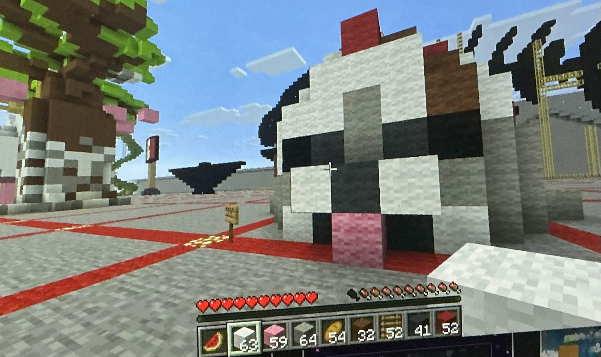

MINECRAFT
Inspired by the recent boom in popularity of the chubby pinniped's, I chose to make a seal into a sculpture using wool blocks from Minecraft. I am also a huge sweet tooth and so I added frosting, cherries, and chocolate drizzle on top to make a little sweet seal, a perfect combination of my current hyperfixations.

